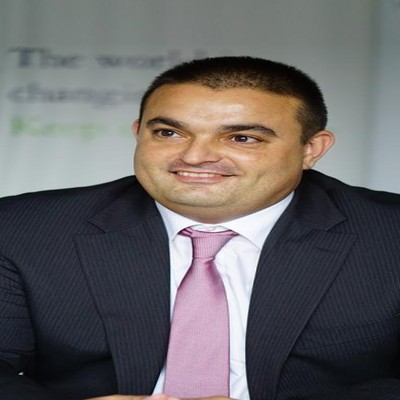

Our Team
Experienced advisors with deep roots in the Western Balkans infrastructure market.

Vladimir Beslagic
Founder & Managing Director
Vladimir Beslagić is the Founder and Managing Director of VZB Consulting d.o.o., with over twenty years of experience in infrastructure advisory across the Western Balkans. He brings established relationships with government ministries and agencies across Serbia and the region, and has led advisory engagements funded by the World Bank, EBRD, EIB, GIZ, USAID, and the Western Balkans Investment Framework (WBIF). His expertise spans infrastructure feasibility studies, public procurement, concession and PPP framework design, and regulatory advisory aligned with EU integration requirements.
We collaborate with a network of senior regional experts and specialist advisors to deliver the full depth of expertise each engagement requires.